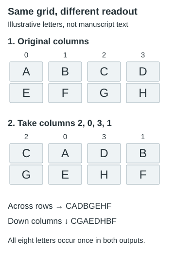

Transposition ciphers
Reorder symbols without substituting their values.
On this page
A transposition rearranges the positions of symbols while keeping the symbols themselves. It is the difference between moving letter tiles and replacing the letters printed on them. Liber Primus research includes a documented column rearrangement in the LP1 title-page payload chain; this guide explains that operation and how to check it.
Preserve symbols, change positions
A permutation uses every position once, preserving length and symbol counts. Atbash and Vigenère change values; a pure transposition does not. Reversal is one simple permutation. Swapping columns of a fixed-width grid is another.
A four-column example
Start with two rows, ABCD and EFGH. Number the columns from zero and read each row in the order [2, 0, 3, 1]. The order means “take the old column 2 first, then 0, then 3, then 1.”

| Output position | Read input column | First row | Second row |
|---|---|---|---|
| 0 | 2 | C | G |
| 1 | 0 | A | E |
| 2 | 3 | D | H |
| 3 | 1 | B | F |
The reordered rows are CADB and GEHF. Reading them from top to bottom gives CADBGEHF. Reading down columns instead would produce CGAEDHBF, a different result. The permutation alone therefore does not specify the complete readout: you must also state the row and column traversal.
Reverse the operation
To undo the rearrangement, put each output character back into the input column from which it came. The inverse order for this example is [1, 3, 0, 2]. It differs from the original order, so applying the original permutation a second time does not generally restore the text.
rows = ["ABCD", "EFGH"]
order = [2, 0, 3, 1]
assert sorted(order) == list(range(4))
encoded = ["".join(row[c] for c in order) for row in rows]
inverse = [order.index(c) for c in range(4)]
decoded = ["".join(row[c] for c in inverse) for row in encoded]
print(encoded, inverse, decoded)
assert encoded == ["CADB", "GEHF"]
assert decoded == rowsThis self-contained Python example prints the rearranged rows, inverse order, and recovered rows. Checking the round trip catches mistakes about which way the permutation maps positions. It does not establish that a chosen permutation solves a manuscript page.
The historical column operation
The cover-chain guide explains how the stored OutGuess payloads combine into a signed message. Its 70-character grid supplies the following five rows. This example needs only Python 3:
rows = [
"IDGTKUMLOOARWO",
"ERTHISUTETLHUT",
"IATSLLOUIMNITE",
"LNJ7TFYVOIUAUS",
"NOCO5JI4MEODZZ",
]
order = [2, 8, 9, 1, 12, 13, 11, 4, 5, 7, 3, 0, 6, 10]
assert sorted(order) == list(range(14))
assert len(rows) == 5 and all(len(row) == 14 for row in rows)
result = "".join(rows[r][c] for r in range(5) for c in order)
assert len(result) == 70
print(result)The first input row becomes GOODWORKULTIMA. The complete output is:
GOODWORKULTIMATETRUTHISTHEULTIMATEILLUSIONJOINUSATFV7LYUCMEOZZD5J4ONIOKeep the final ONIO as produced. The historical interpretation supplies another N to form an onion-address ending, but adding a character is not a transposition. The cover-chain explanation preserves this distinction and the historical address.
What cannot change under a pure transposition?
See what cipher operations preserve for a side-by-side comparison with substitution and position-dependent shifts, including a runnable five-rune example.
The total length and each symbol’s count must remain the same. Consequently, a sum of fixed rune values and whole-stream IoC remain unchanged too. These are useful checks: if a purported rearrangement changes one of them, it also changed, added, or removed symbols.
What can change is adjacency and location. Word-like sequences, repeated neighboring pairs, column statistics, and which symbols fall on a particular row can all change. An improvement in one of those measurements must be evaluated against the choices tried; preserving the global counts does not guarantee meaningful output.
These statements assume a fixed symbol sequence. Adding padding to fill a grid, dropping a final partial row, or splitting a multi-letter rune label into separate Latin characters changes the input. For rune work, choose the actual rune as the unit; see transcription layers. The historical example above instead rearranges the Latin characters of an extracted message.
When the last row is incomplete
This is an invented example, not a proposed manuscript decoding. Put ABCDEFGHI into rows of width four:
A B C D
E F G H
IThe final row has one occupied position. Using the earlier order [2, 0, 3, 1], one explicit rule is to visit those columns in each row and skip positions that do not exist. The rows then become CADB, GEHF, and I. The combined output is CADBGEHFI: all nine original characters occur once.
| Last-row decision | Result under this row readout | Effect on the input |
|---|---|---|
| Keep occupied positions; skip absent cells | CADBGEHFI | Preserves all nine characters. |
Pad the row as I··· | CADBGEHF·I·· | Adds three placeholder characters. Here · is an invented pad symbol. |
| Discard the incomplete row | CADBGEHF | Removes the original I. |
Neither padding nor deletion is a pure permutation of the original nine-character sequence. A padding rule also needs a removal rule when decoding; deleting every occurrence of the pad character can erase real data if that character was already present.
Reproduce the occupied-position rule
from collections import Counter
source = "ABCDEFGHI"
width = 4
order = [2, 0, 3, 1]
rows = [source[i:i + width] for i in range(0, len(source), width)]
result = "".join(row[c] for row in rows for c in order if c < len(row))
assert result == "CADBGEHFI"
assert len(result) == len(source)
assert Counter(result) == Counter(source)
print(result)The condition checks whether a position exists; it does not discard any character based on its value. Column-first traversal of this same ragged grid would give CGAEIDHBF, so the fill direction and read direction still matter. The fourteen-column historical example above has five complete rows and does not require any of these short-row choices.
Define the search space
Record grid dimensions, fill and read directions, padding, and permutation. Fourteen columns admit 14! = 87,178,291,200 orders. A fragment selected after many choices needs stronger support than a prediction from an independently specified order. See controls and scope.
Sources and verification
Pinned historical walkthrough. Recipes reproduce published controls; they are not new solutions. Local computational verification: 19 October 2026.
A bounded reading-route experiment
The archived-layout route experiment tests sixteen row/column traversal configurations on LP2-00–55, retaining source-coordinate traces. None of its 880 cases matches the nine declared known openings. This limited criterion does not rule out other plaintext beginnings or transposition methods.
A separate within-word reversal experiment reverses runes inside transcription-defined segments while preserving segment order. It tests both splitting at line breaks and joining across them: 110 distinct page outputs, with no matches to the same nine beginnings. Its source-position diagram shows where those boundary conventions produce different routes. These segments are not independently established plaintext words.
The segment-order reversal experiment tests the other meaning of “read the words backwards”: read the last segment first but keep its runes in forward order. Its 110 distinct outputs also match none of the nine beginnings. For an invented input AB | C | DEF, within-segment reversal gives BA | C | FED, while segment-order reversal gives DEF | C | AB. Applying both gives whole-stream reversal, so those combined operations do not create an additional reading rule.